돼지 · 삼겹살/수육
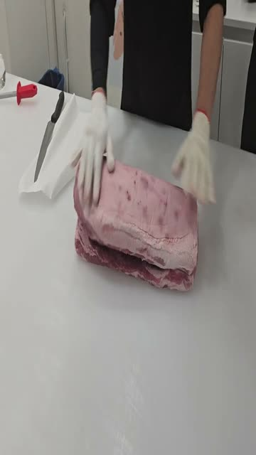
⭐ BEST#1
PORK BELLY SAMGYUPSAL (SKIN ON)
PORK BELLY SAMGYUPSAL (SKIN ON)
8개 클립
⭐ BEST
#2
PORK BELLY SUYOOK (SKIN ON)
PORK BELLY SUYOOK (SKIN ON)
8개 클립
⭐ BEST
#3
PORK BELLY CROSS CUT (SKINLESS)
PORK BELLY CROSS CUT (SKINLESS)
8개 클립
#4
PORK BELLY ROLL (SKINLESS)
PORK BELLY ROLL (SKINLESS)
9개 클립
⭐ BEST
#5
PORK BELLY FLOWER CUT
PORK BELLY FLOWER CUT
9개 클립
#6
PORK BELLY FLAT (SKINLESS)
PORK BELLY FLAT (SKINLESS)
8개 클립
#7
PORK BELLY HALF CUT
PORK BELLY HALF CUT
8개 클립
#8
PORK BELLY SUYOOK (SKINLESS)
PORK BELLY SUYOOK (SKINLESS)
8개 클립
⭐ BEST
#9
PORK BELLY SHABU - FLAT
PORK BELLY SHABU - FLAT
8개 클립
#10
PORK BELLY SHABU - ROLL
PORK BELLY SHABU - ROLL
8개 클립
돼지 · 목살/등심/기타
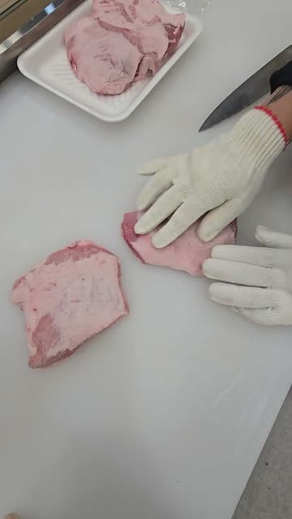
⭐ BEST#11
BONELESS PORK SHOULDER STEAK
BONELESS PORK SHOULDER STEAK
20개 클립
⭐ BEST
#12
SPECIAL PORK SHOULDER SET
SPECIAL PORK SHOULDER SET
16개 클립
#13
SPECIAL PORK SHOULDER & BELLY
SPECIAL PORK SHOULDER & BELLY
16개 클립
#14
MIXED PORK FOR SOUP
MIXED PORK FOR SOUP
17개 클립
⭐ BEST
#15
PORK GALBI / HONEYCOMB
PORK GALBI / HONEYCOMB
16개 클립
#16
PORK SHOULDER SHABU
PORK SHOULDER SHABU
17개 클립
#17
PORK SHANK STEAK (BONE IN)
PORK SHANK STEAK (BONE IN)
16개 클립
⭐ BEST
#18
PORK JOWL - HANGJEONG (항정살)
PORK JOWL - HANGJEONG (항정살)
16개 클립
⭐ BEST
#19
PORK JOWL - MARBLING
PORK JOWL - MARBLING
16개 클립
#20
SPECIAL SET - PORK JOWL
SPECIAL SET - PORK JOWL
16개 클립
#21
PORK LOIN BONELESS (KATSU)
PORK LOIN BONELESS (KATSU)
16개 클립
#22
PORK LOIN SHABU ROLL
PORK LOIN SHABU ROLL
16개 클립
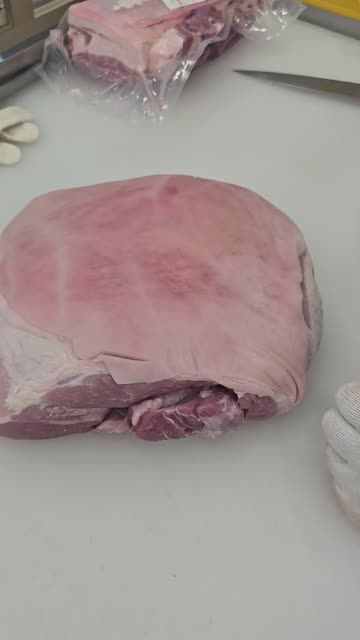
#23
MIXED PORK GROUND
MIXED PORK GROUND
12개 클립
돼지 · 갈비/뼈류
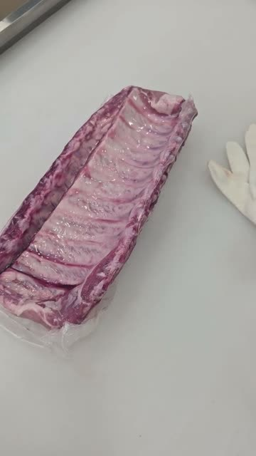
⭐ BEST#24
PORK BABY BACK RIB CUT
PORK BABY BACK RIB CUT
5개 클립
#25
PORK BABY BACK RIBS - CHAIN
PORK BABY BACK RIBS - CHAIN
5개 클립
#26
PORK BABY BACK RIBS - WHOLE
PORK BABY BACK RIBS - WHOLE
5개 클립
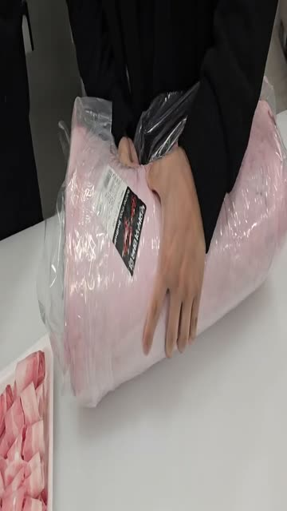
#27
PORK SPARE RIB CUT
PORK SPARE RIB CUT
1개 클립
촬영 필요
재촬영 필요#28
PORK NECK BONE
PORK NECK BONE
0개 클립
촬영 필요
재촬영 필요#29
PORK FRONT FEET
PORK FRONT FEET
0개 클립
촬영 필요
재촬영 필요#30
PORK HOCK
PORK HOCK
0개 클립
촬영 필요
재촬영 필요#31
PORK BONE - FEMUR (SOUP)
PORK BONE - FEMUR (SOUP)
0개 클립
소 · 등심/차돌박이
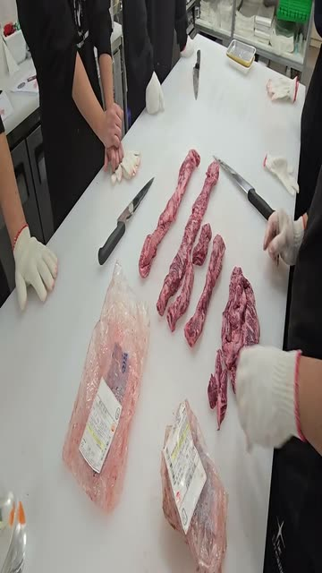
⭐ BEST#32
BEEF RIBEYE THIN - BULGOGI
BEEF RIBEYE THIN - BULGOGI
6개 클립
⭐ BEST
#33
BEEF RIBEYE SHABU
BEEF RIBEYE SHABU
5개 클립
#34
BEEF RIBEYE SAEWOO
BEEF RIBEYE SAEWOO
5개 클립
⭐ BEST
#35
BEEF RIBEYE STEAK
BEEF RIBEYE STEAK
8개 클립
⭐ BEST
#36
SPECIAL BEEF SET
SPECIAL BEEF SET
8개 클립
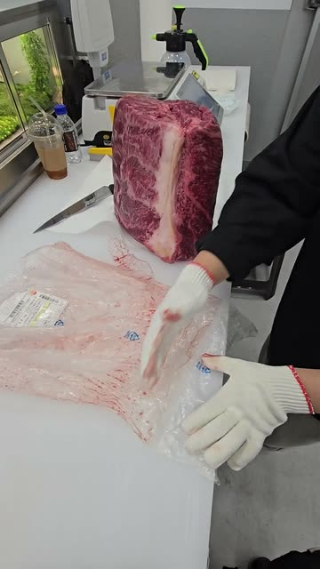
⭐ BEST#37
BEEF BRISKET SHABU (FLAT)
BEEF BRISKET SHABU (FLAT)
9개 클립
⭐ BEST
#38
BEEF BRISKET SHABU (ROLL)
BEEF BRISKET SHABU (ROLL)
9개 클립
#39
BEEF BRISKET STEAK
BEEF BRISKET STEAK
8개 클립
#40
BEEF BRISKET WHOLE
BEEF BRISKET WHOLE
8개 클립
⭐ BEST
#41
BEEF NAVEL SHABU
BEEF NAVEL SHABU
8개 클립
#42
BEEF NAVEL STEAK
BEEF NAVEL STEAK
8개 클립
소 · 목심/우둔/기타
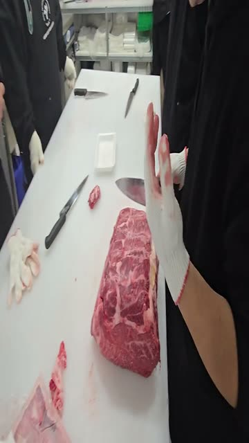
⭐ BEST#43
BEEF CHUCK TOP BLADE STEAK
BEEF CHUCK TOP BLADE STEAK
5개 클립
#44
BEEF CHUCK TOP BLADE SHABU
BEEF CHUCK TOP BLADE SHABU
5개 클립
⭐ BEST
#45
BEEF CHUCK FLAP TAIL (살치살)
BEEF CHUCK FLAP TAIL (살치살)
7개 클립
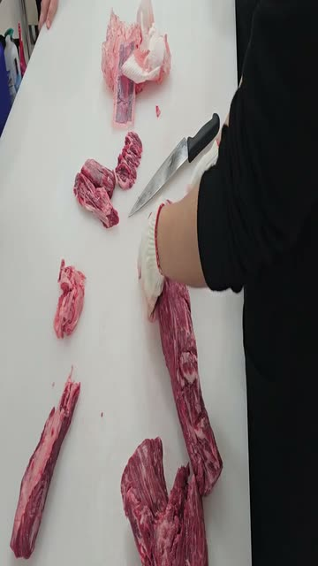
#46
BEEF CHUCK FLAP STEAK
BEEF CHUCK FLAP STEAK
5개 클립
#47
BEEF EYE ROUND STEAK
BEEF EYE ROUND STEAK
5개 클립
#48
BEEF EYE ROUND SHABU
BEEF EYE ROUND SHABU
5개 클립
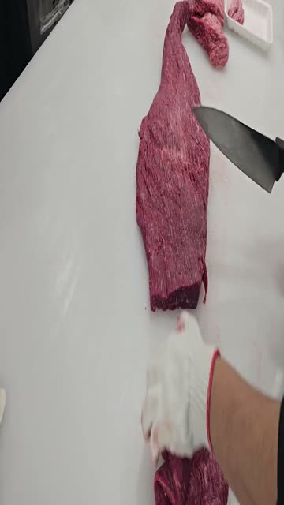
⭐ BEST#49
BEEF SKIRT STEAK
BEEF SKIRT STEAK
6개 클립
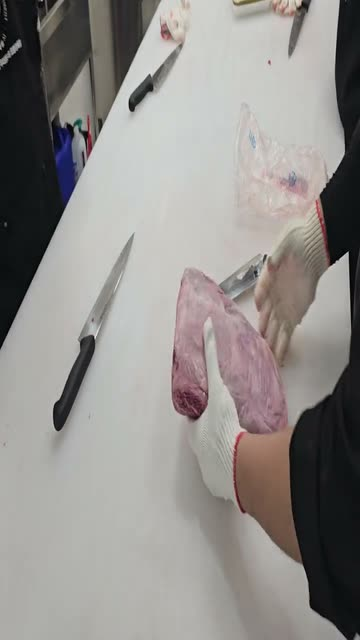
#50
BEEF SKIRT SHABU
BEEF SKIRT SHABU
2개 클립
소 · LA갈비/탕류 뼈
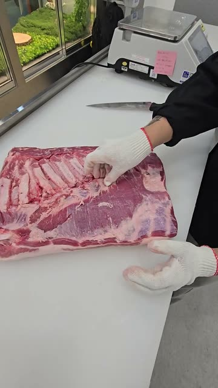
⭐ BEST#51
BEEF SHORT RIB 3-BONE (LA GALBI)
BEEF SHORT RIB 3-BONE (LA GALBI)
8개 클립
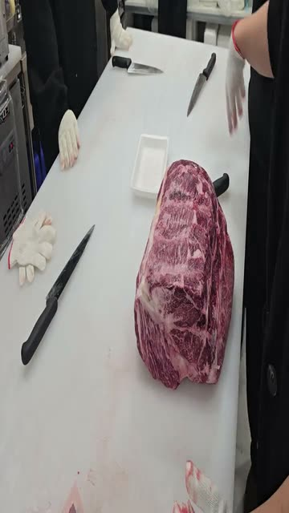
#52
BEEF SHORT RIB BONE (SOUP)
BEEF SHORT RIB BONE (SOUP)
2개 클립
⭐ BEST
#53
BONELESS BEEF SHORT RIB (갈비살)
BONELESS BEEF SHORT RIB (갈비살)
2개 클립
#54
BEEF SHORT RIB FOR STEW
BEEF SHORT RIB FOR STEW
2개 클립
#55
BEEF BACK RIB
BEEF BACK RIB
2개 클립
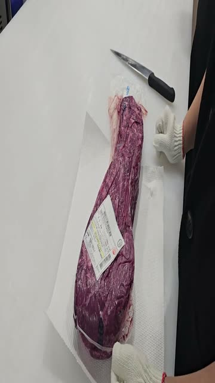
#56
BEEF CHUCK SHORT RIB W/BONE
BEEF CHUCK SHORT RIB W/BONE
3개 클립
#57
BEEF CHUCK SHORT RIB (STEW)
BEEF CHUCK SHORT RIB (STEW)
3개 클립
⭐ BEST
#58
BEEF CHUCK SHORT RIB BONELESS
BEEF CHUCK SHORT RIB BONELESS
3개 클립
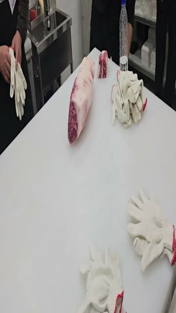
#59
BEEF GROUND
BEEF GROUND
3개 클립
#60
MIXED BEEF FOR SOUP
MIXED BEEF FOR SOUP
1개 클립
★ 프리미엄 컷 (Chapter 3)
촬영 필요
★ 프리미엄재촬영 필요#1
토시살
Hanger Steak, Cleaned
0개 클립
촬영 필요
★ 프리미엄재촬영 필요#2
제비추리
Shoulder Tender (Teres Major)
0개 클립
촬영 필요
★ 프리미엄재촬영 필요#3
안창살
Inside Skirt Steak, Peeled
0개 클립
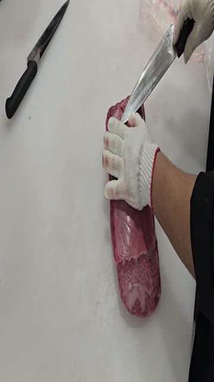
★ 프리미엄#4
치마살
Beef Flap Meat (Sirloin Flap)
1개 클립
촬영 필요
★ 프리미엄재촬영 필요#5
살치살
Chuck Flap Tail
0개 클립
촬영 필요
★ 프리미엄재촬영 필요#6
부채살
Flat Iron (Top Blade)
0개 클립
촬영 필요
★ 프리미엄재촬영 필요#7
늙간살
Rib Fingers (Intercostal)
0개 클립
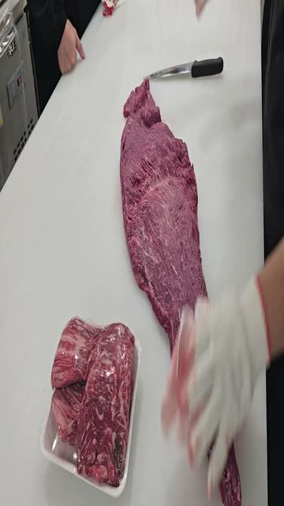
★ 프리미엄#8
업진살
Short Plate (Beef Belly)
2개 클립
촬영 필요
★ 프리미엄재촬영 필요#9
새우살
Ribeye Cap (Spinalis)
0개 클립
촬영 필요
★ 프리미엄재촬영 필요#10
알등심
Ribeye Roll, Export Style
0개 클립
촬영 필요
★ 프리미엄재촬영 필요#11
홍두깨살
Eye of Round
0개 클립
촬영 필요
★ 프리미엄재촬영 필요#12
꽃등심덧살
Lifter Meat (Blade Meat)
0개 클립
🎬 인트로 / 소개
인트로/소개
작업자 정면, 빨간 모자 + 검정 유니폼, 칼 세팅. 3초. 영상 인트로 쇼트 후보.
🔪 Chapter 1 — 오픈 / 도구 준비 / 위생
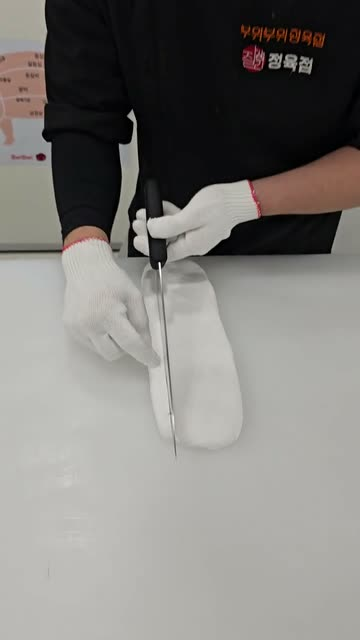
칼 자세 교육
돼지 부위 다이어그램 포스터 배경 + 칼 세로 절단 시범 (빈 작업대). 1분 8초. Ch1 칼 각도/자세 교육 메인.
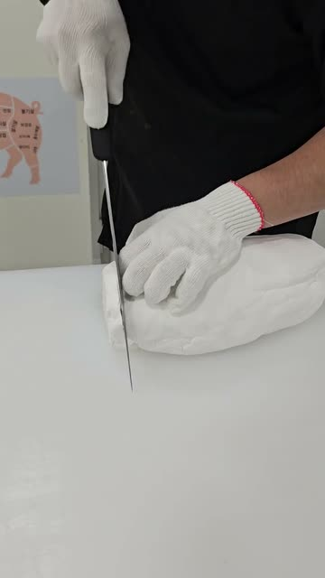
칼 샤프닝+부위도
칼 갈기 진행 + 뒤에 돼지 부위 다이어그램 포스터. 3분 53초. Ch1 도구+부위 해부 종합 클립.
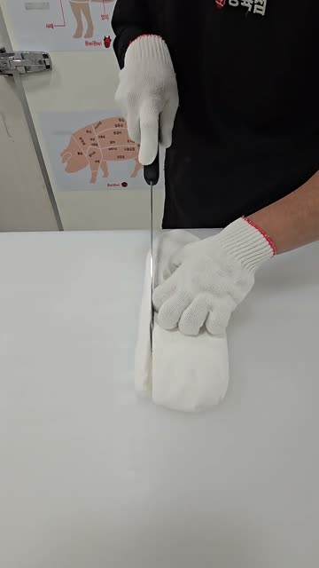
수건 절단 + 부위도
흰 수건 칼로 절단 + 돼지 부위 포스터. 1분 25초. Ch1 샤프니스/부위 해부 종합.
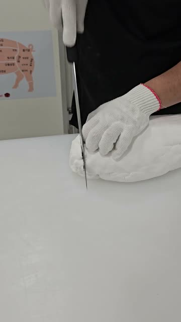
칼 샤프닝
숫돌 위에서 칼 갈기 동작. 15초. Ch1 도구 준비 메인 클립. 교육용.
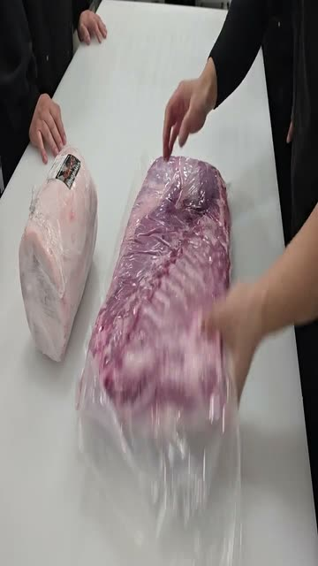
진공 포장 수령 상태
진공 포장된 돼지 원육 블록. 포장 해체 직전. 1분 51초.
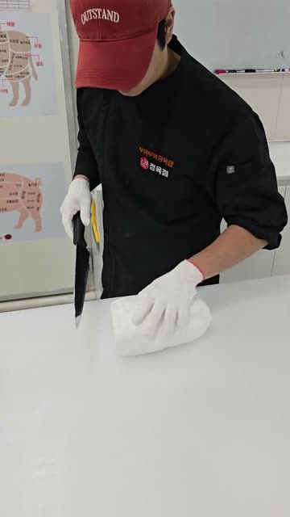
칼 날카로움 테스트
흰 수건/종이 칼로 절단 - 샤프니스 테스트. 5분 12초. Ch1 도구 준비.
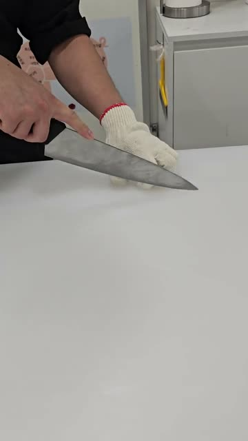
칼 세팅
숫돌 + 장갑 + 칼 세팅. 19초. 도구 준비 섹션 오프닝.
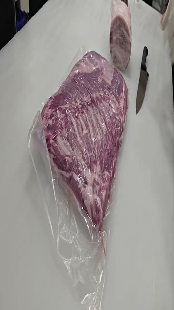
원육 확인
동일 진공포장 블록 다른 각도. 9초. B-roll.
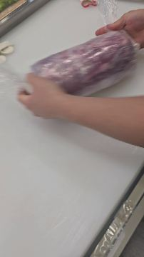
비닐 포장 해체
연보라색 돼지 원육 블록 비닐 포장 해체. 해동/수령 단계. 5분 17초. 길지만 교육 가치 낮음.
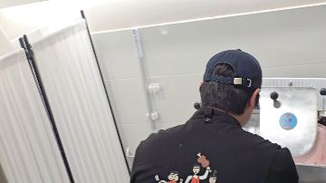
손 세척
사람 뒷모습 싱크대 손 씻기. 3분 9초. 위생 절차 교육용.
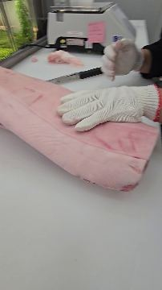
작업대 세팅/매트 정리
분홍 흡수매트 위 작업대 준비. 면장갑 착용 후 정돈 작업. 저울·포장대 가동 시작.
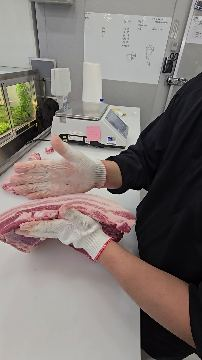
흡수매트 수분 제거
분홍 흡수매트 위 양손 정리 작업. 수분·핏물 흡수매트 교체. 1분 36초. 위생/준비 단계.
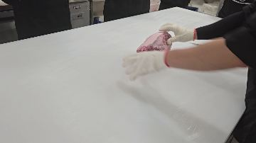
포장 해체
포장 해체 중 면장갑. 28초.
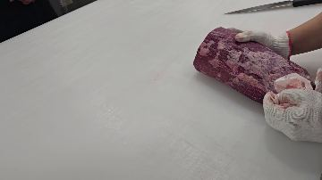
포장품 핸들링
진공 포장 분홍 고기 블록. 33초. 원육 수령.
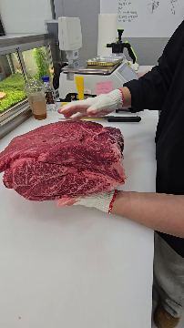
싱크대 세척
사람 뒷모습, 싱크대 세척 중. 10초. 위생/마감.
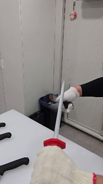
싱크대 준비
작업자 싱크대 옆 서 있음. 6초. 위생 준비 시작.
📦 Chapter 4 — 진열 / 포장 완제품
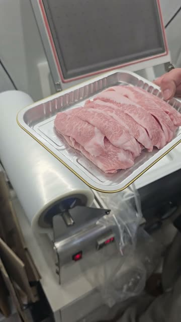
트레이 담기/진공포장
삼겹살 슬라이스 알루미늄 트레이 담아 포장 기계 옆. 4분 57초. 포장/진열 섹션 메인.
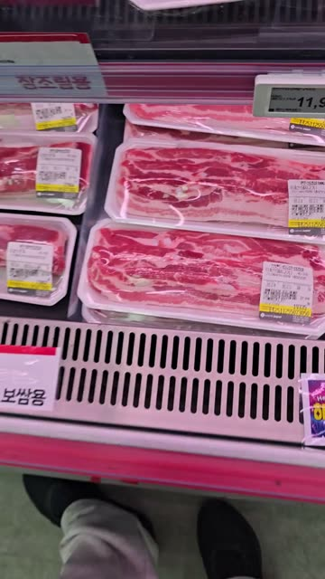
진열대 촬영
매장 냉장 진열대 실사 - 보쌈용 삼겹살 트레이 + 가격 라벨. 52초. 최종 진열 목표 레퍼런스.
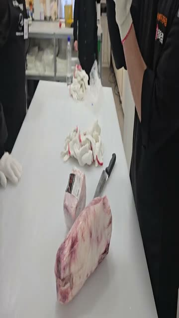
진공 포장
포장지에 쌓인 고기 + 포장 기계. 2분 7초.
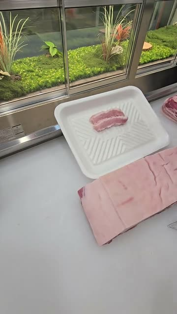
완제품 진열 샘플
삼겹살 포장 완제품 트레이 + 분홍 랩 슬라이스 묶음. 진열대 레퍼런스. 2분 37초.
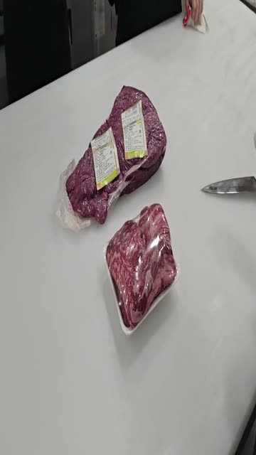
진공 포장 완성
진공 팩 + 트레이 완제품. 상품 라벨 부착. 1분 8초. 진열 레퍼런스.
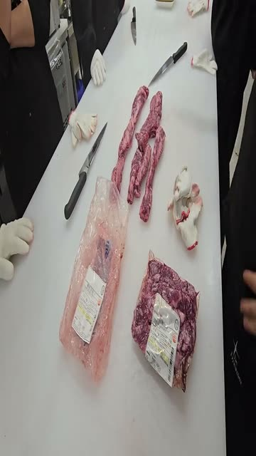
샤브 진공 포장
샤브 슬라이스 진공 포장 완성품 + 작업 잔여물. 1분 13초.
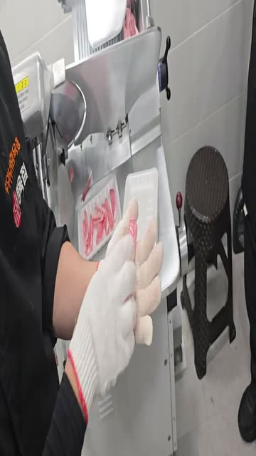
완제품 포장
작은 트레이에 분홍 슬라이스 + 면장갑. 7분 56초. 슬라이스 포장 과정.
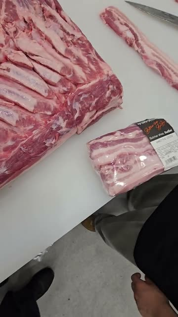
완제품 포장 레퍼런스
검정 바코드 라벨 붙은 삼겹살 완제품 패키지 클로즈업. 진열 배치도/완성 상태 레퍼런스용. 12초.
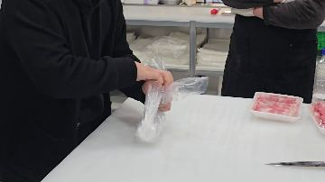
포장지 세팅
포장기에 비닐 롤 세팅. 1분 50초. 포장 준비.
🧼 Chapter 5 — 안전 / 위생
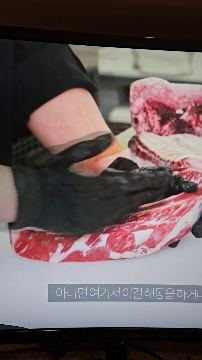
외부 영상 녹화
TV 화면 녹화 - 한국어 자막 "...이런 행동은 하지..." + 지방 제거 시연. 25초. 참조/교육 소스.
🌙 Chapter 8 — 마감
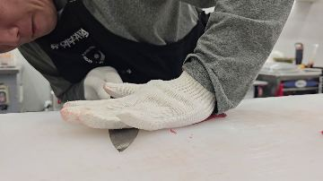
작업대 정리
칼로 작업대 닦기/긁기. 4분 14초. 마감 정리.
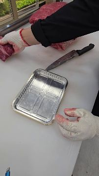
작업 마감 정리
빈 알루미늄 트레이 + 칼 + 핏자국 장갑. 작업 종료 정리. 21초.